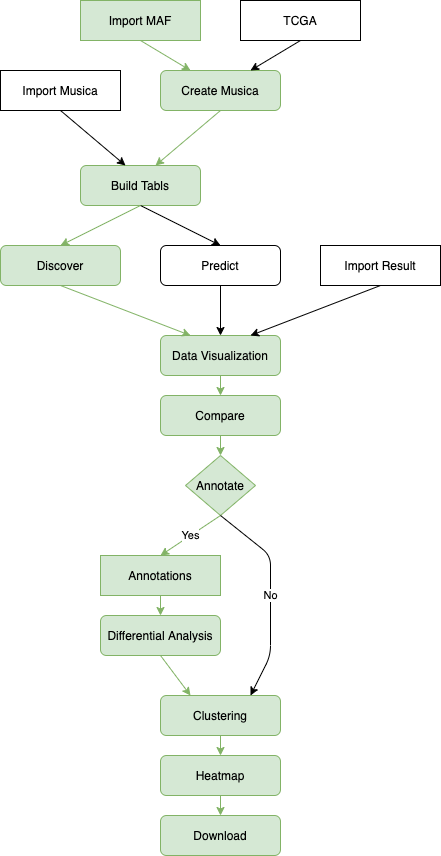
Import
Users can upload their datasets through 1 of 3 different methods. - “Import Files” - upload MAF and VCF files containing the variant data. - “Import TCGA Datasets” - easily import all open access TCGA tumor datasets. - “Import Musica Result Object” - upload existing musica and result objects.
Import Files
In order to discover or predict signatures, VCF or MAF files need to be uploaded in this section.The files can be browsed through by selecting the ‘browse’ button under the ‘Select Files’ label.
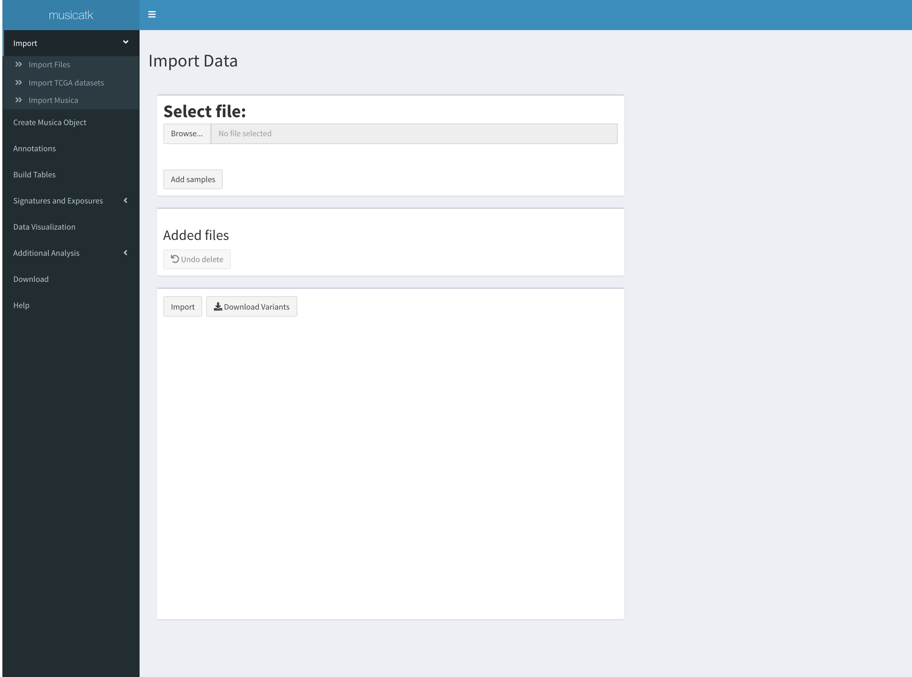
After that, the ‘Add Samples’ button can be pressed to see the added files. At this stage, the delete and undo button next to the file can be pressed to remove it or revert the change respectively. After adding the files, the ‘Import’ button can be pressed to start the importing process.
Once the process is completed, a notification in the bottom right will appear. A variants table from the uploaded files files will also appear which can be downloaded by pressing the ‘Download Variants’ button.
Import TCGA Datasets
This tab allows selection of single or multiple TCGA datasets directly instead of providing user VCFs and MAFs in the ‘Import Files’ step. This is an optional step and not needed. Users have their own data. The TCGA datasets have been named in the following format: TCGA Abbreviation - Full TCGA tumor name. The original TCGA page for the tumor name list can be referred to by selecting the ‘Full Tumor List’ link right next to the ‘Import’ button. Once the datasets have been selected, the ‘Import’ button at the bottom can be pressed. Once finished, a completion notification will appear at the bottom right. 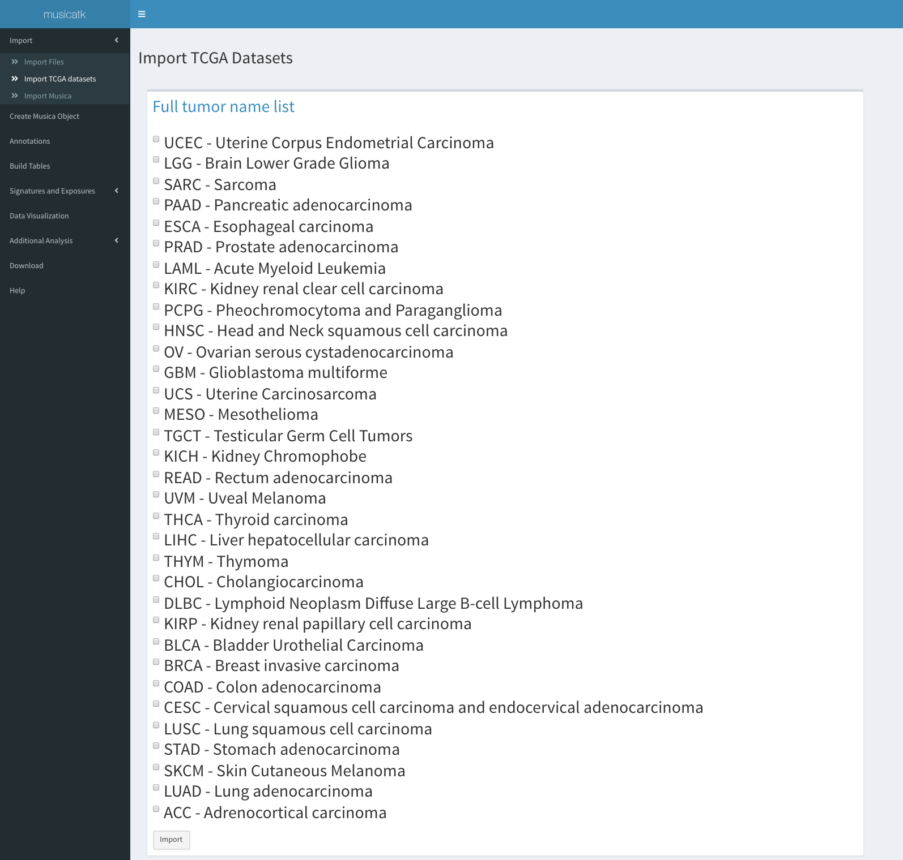 ## Import Musica This tab can be used to import user’s musica result or musica objects in .rda or .rds format which will allow for direct downstream analysis in the workflow. The browse button in the musica result or musica result object can be selected for selecting files. Once selected, a bar saying file upload is completed will appear. By default, the musica result objects will be named after the file’s name but it can be changed in the text box labeled “Name your musica result object”. Once finished, a completion notification message in the bottom right and a variants table of the uploaded file will appear. At this stage, the next steps in the workflow can be accessed directly. If a musica result object has been uploaded, all the downstream tabs are now accessible and if a musica object has been uploaded then the users can skip the Create Musica tab and move to the build tables tab directly. The variants table can be downloaded using the "Download Variants’ button.
Create Musica Object
This tab can be used to create a musica object for discovery and prediction of signatures from the given variants. The reference genome can be selected from the drop down menu labeled “Choose Genome” that matches the genome build of the variants and the ‘Create Musica Object’ button can then be pressed. Once it’s done, a completion notification message at the bottom right and a variant summary table will appear. The musica object can be downloaded by pressing the ‘Download Musica Object’ button.
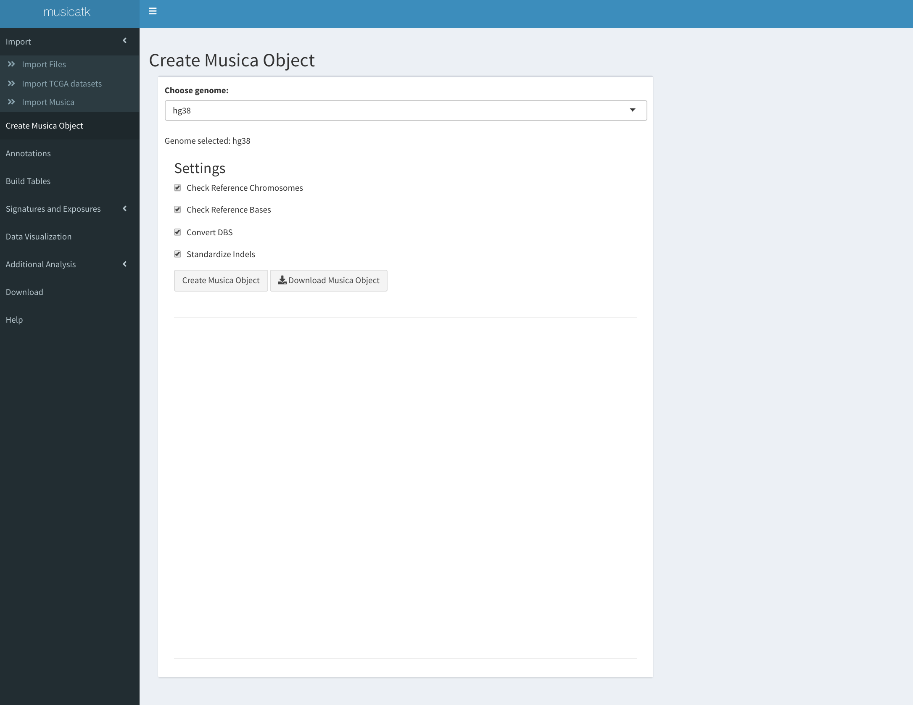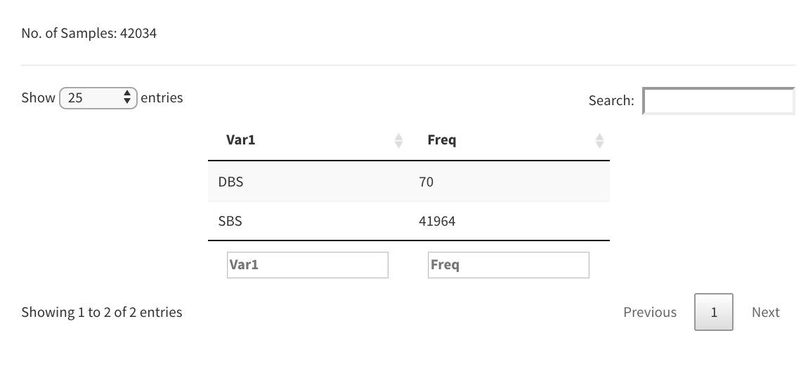
Annotations
Sample annotations can be used to store information about each sample such as tumor type or treatment status. They are optional and can be used in downstream plotting functions such as plot_exposures or plot_umap to group or color samples by a particular annotation.
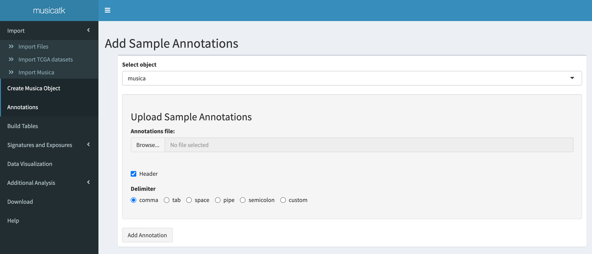
Annotations are provided in a character delimited text file which includes a sample name column. The sample names must match the sample names in the selected musica object. NA values will be used for any samples not present in the annotation file.
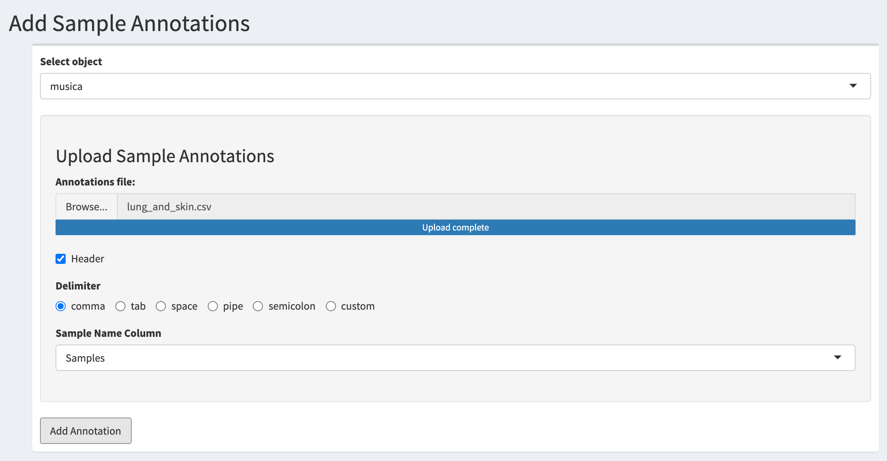
After selecting the correct delimiter, a data table will appear below to show the annotations that will be added to the musica object. If your annotation file does not contain a header, deselect the “Header” radio button. Choose the column that contains the sample names from the “Sample Name Columns” dropdown and then click “Add Annotation”.
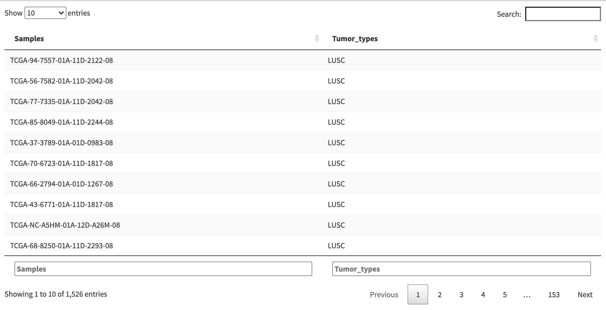
Build Tables
The “Build Tables” tab is used to generate count tables for different mutation type schemas which are the input to mutational signature discovery or prediction functions. To build the count tables, the user must select 1 of the 5 standard motifs in the “Select Count Table” dropdown. SBS96 - Motifs are the six possible single base pair mutation types times the four possibilities each for upstream and downstream context bases (464 = 96 motifs)
SBS192_Trans - Motifs are an extension of SBS96 multiplied by the transcriptional strand (translated/untranslated), can be specified with “Transcript_Strand”.
SBS192_Rep - Motifs are an extension of SBS96 multiplied by the replication strand (leading/lagging), can be specified with “Replication_Strand”.
DBS - Motifs are the 78 possible double-base-pair substitutions.
INDEL - Motifs are 83 categories intended to capture different categories of indels based on base-pair change, repeats, or microhomology, insertion or deletion, and length. In addition to selecting a motif, the user must also provide the reference genome.
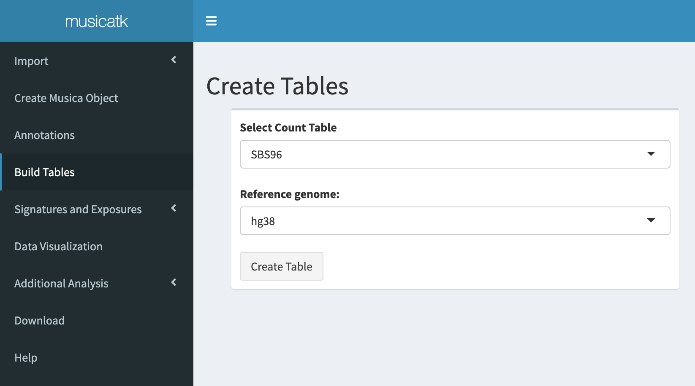
Signatures and Exposures
The user has the option of discovering novel signatures and exposures, or using previously discovered signatures to predict exposures. To discover signatures use the “Discover” tab. To predict signature exposures, use the “Predict” tab.
Discover
Mutational signatures and exposures can be discovered using methods such as Latent Dirichlet Allocation (LDA) or Non-Negative Matrix Factorization (NMF). These algorithms will deconvolute a matrix of counts for mutation types in each sample to two matrices: 1) a “signature” matrix containing the probability of each mutation type in each sample and 2) an “exposure” matrix containing the estimated counts for each signature in each sample. Before mutational discovery can be performed, variants from samples first need to be stored in a musica object using the create_musica function and mutation count tables need to be created using functions such as build_standard_table.
You can select any count table for signature discovery. To obtain biologically significant results, it is important to select a reasonable number of expected signatures. In this tutorial, we chose 8 signatures.

Predict
Exposures for samples will be predicted using an existing set of signatures stored in a musica_result object. Algorithms available for prediction include “lda”, “decompTumor2Sig”, and “deconstructSigs”.
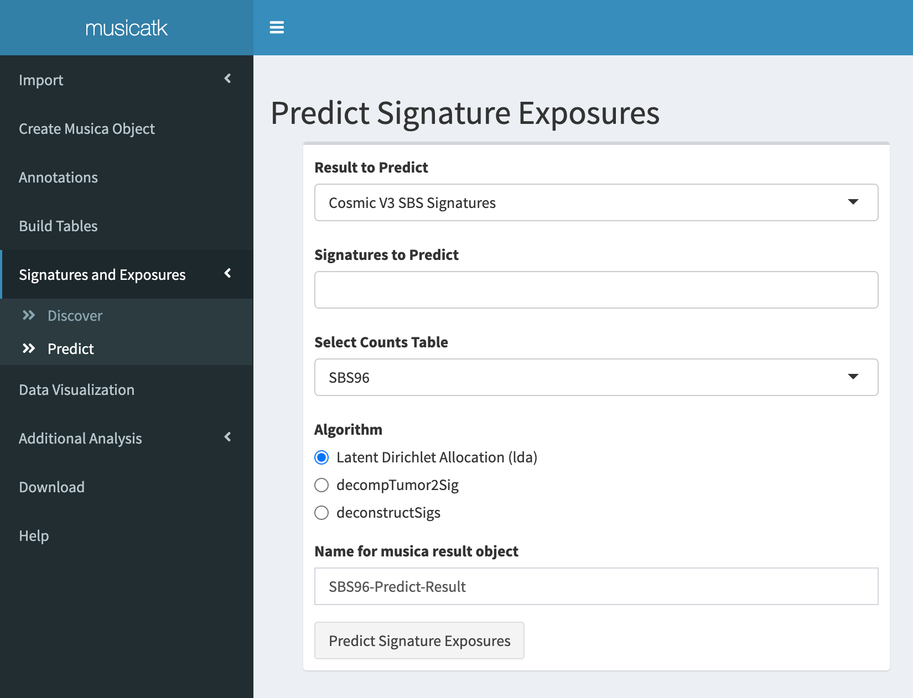
The “Signatures to Predict” dropdown contains all the signatures in the result object selected from the “Result to Predict” dropdown. You can search this dropdown and select multiple signatures. In our example we use the “lda” algorithm to predict exposures of 6 Cosmic signatures in our samples.
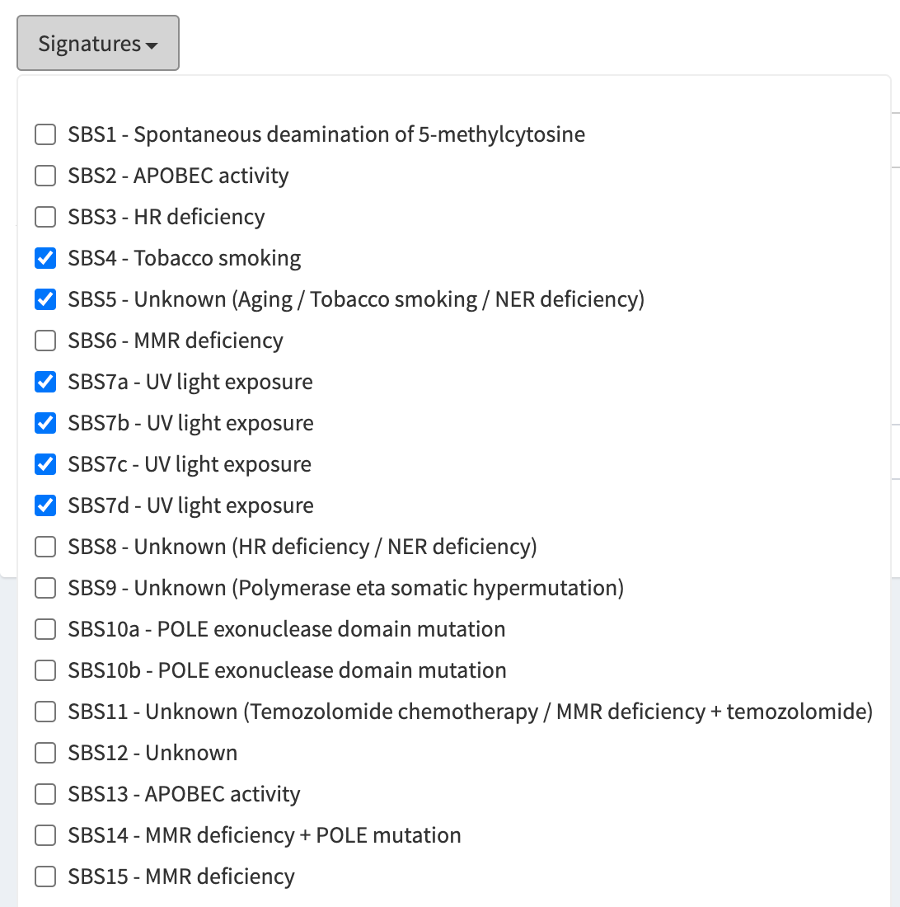
Data Visualization
The data visualization tab can make customized plots for signatures and exposures predicted from LDA and NMF algorithms using the ggplot2 package. An option of making interactive plots using plotly is also provided.
Signatures
The signature plot is presented only using bar plot with each bar representing the probability of each type of mutation. By default, signatures are named by numbers, but an option of renaming signatures is provided if you want to name them otherwise, such as the possible etiology.
In this tutorial, we found 8 single-base signatures from the mixture of lung adenocarcinoma, lung squamous cell carcinoma, and skin cutaneous melanoma samples.
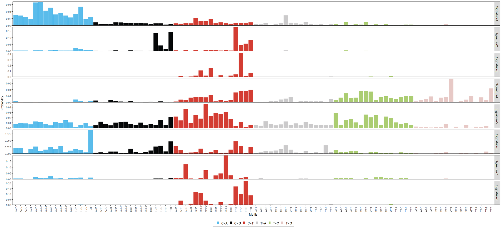
Exposures
To visualize the exposure of each signature for each sample, we provided three options, including bar plot, box plot, and violin plot.
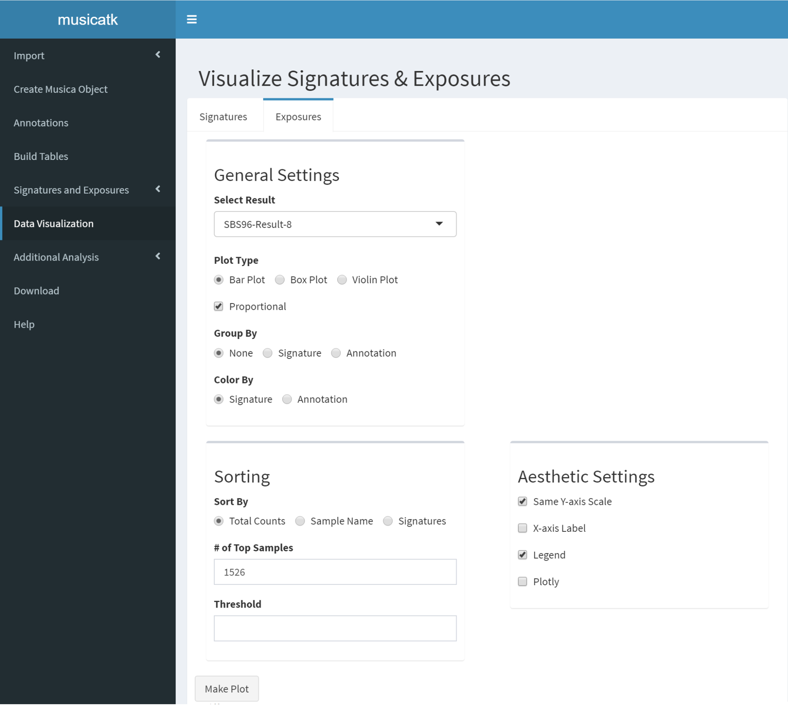
By default, a stacked bar plot sorted by the total number of mutations is used. Each stacked bar shows the proportion of exposure of each signature.
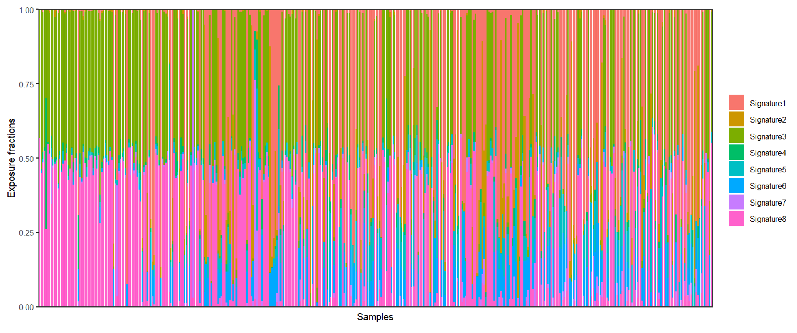
The stacked bar plot can be ordered by signatures. If Signatures is selected in Sort By option, a bucket list will show up to allow you select the signatures you want to use by dragging them from the left box to the right box. Users can also set limit on the number of samples to display.
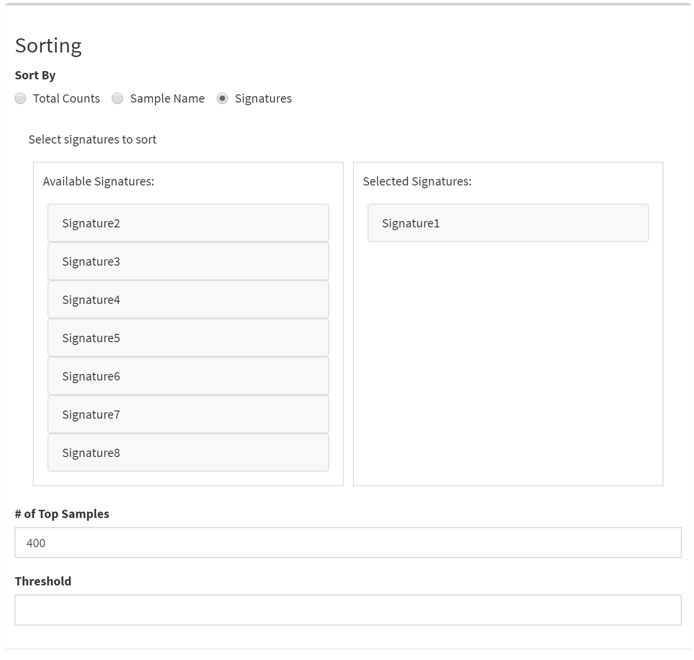
This stacked bar plot is now ordered by the exposure of signature 1 and only top 400 samples were included here.

Box plot and violin plot can be used to visualize the distribution of exposures or compare exposures between different groups of samples.

By default, a box plot of exposure for each signature will be shown.

If an annotation file is provided, then you can visually compare the exposure of signatures among different groups.
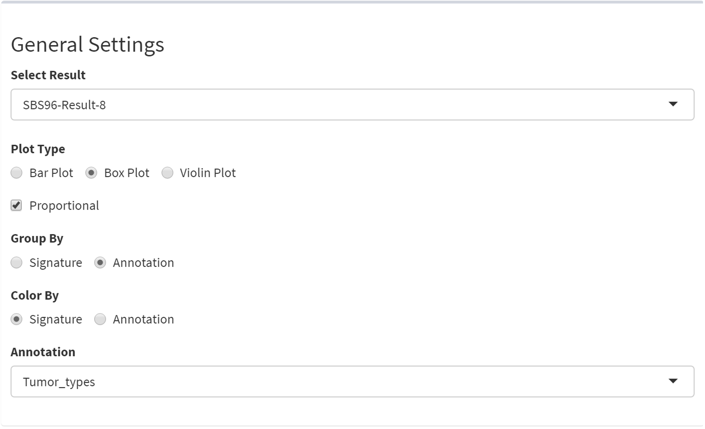
In this box plot, exposures of each signature were grouped by tumor types. We can find that signatures 1 and 5 were highly exposed in lung cancer samples, while signatures 3 and 8 were enriched in skin cancer samples.

We can also group samples by signatures and then color by tumor types.

This plot can let you directly compare how each signatures were differentially exposed among three tumor types.
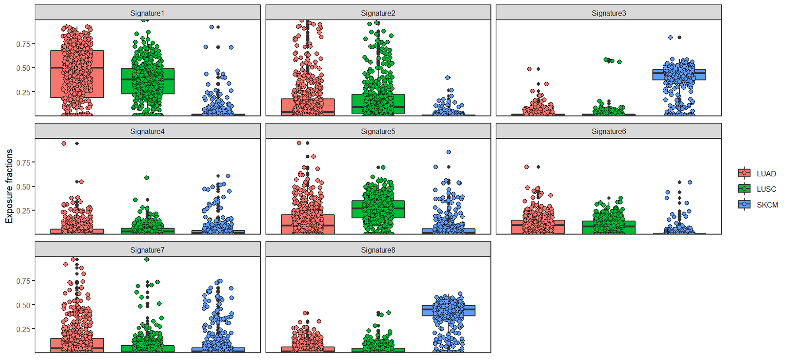
Additional Analysis
Compare Signatures
Compare two result objects to find similar signatures. The threshold acts as a cutoff similarity score and can be any value between 0 and 1. Results will populate in a data table below which can be downloaded.
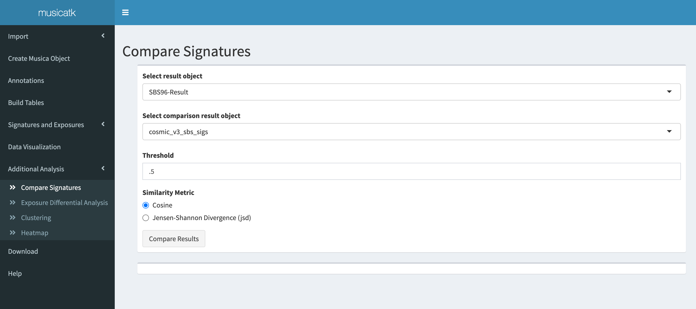
Using the cosine metric with a threshold of 0.8 we can identify 7 pairs of similar signatures. Interestingly, we identified a pair with a high cosine similarity score - signature1 and Cosmic SBS4. Our results indicate we may have identified a tobacco smoke signature among our tumor samples. This should not be a surprise given many of our samples are from lung tumors.

Exposure Differential Analysis
The “Exposure Differential Analysis” tab is used to run differential analysis on the signature exposures of annotated samples. There are 3 methods to perform the differential analysis: Wilcoxon Rank Sum Test, Kruskal-Wallis Rank Sum Test, and a negative binomial regression (glm).

When using the Wilcoxon Rank Sum Test, any two groups will be compared in a pairwise fashion. Any isolated group will be ignored. Below we display the Wilcoxon Rank Sum Test results between LUAD and SKCM. Note that LUAD was ignored since it has no pair.
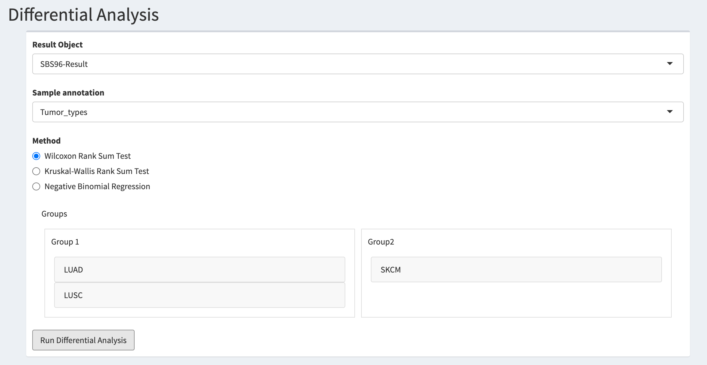
From our table, we can see several of our signatures are differentially exposed across tumor types. From our comparison analysis, we can hypothesize signature1 may be related to tobacco smoke. We may hypothesize tobacco smoke is a primary driving mechanism for lung cancer development, but not for skin cancer.

Clustering
The clustering subtab provides several algorithms to cluster samples based on exposure of each signature. After selecting the musica result object, it is recommended to use Explore Number of Clusters box to find the optimal number of clusters in your data. Different clustering algorithms and three metrics including within cluster sum of squares, averaged silouette coefficient, and gap statistics are provided here for exploration. All algorithms were imported from factoextra and cluster. (Note: If gap statistic is selected, it will take much longer time to generate the plot.)

This is a connected scatter plot shows the within cluster sum of squares for each number of clusters predicted using hierarchical clustering. The “elbow” method can be used to determine the optimal number of clusters.
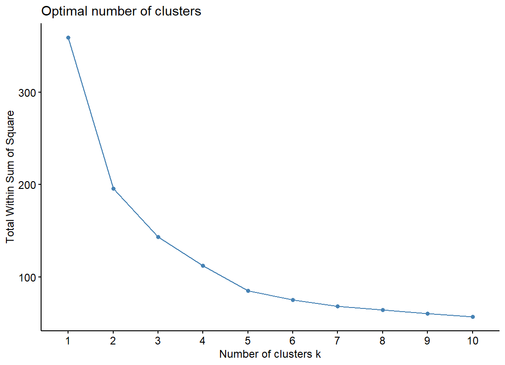
The Clustering box is where you perform the clustering analysis. In addition to clustering algorithm, several methods for calculating dissimilarity matrix, imported from philentropy package, are also provided.

This table is the output of clustering analysis, combined with annotation.

In the Visulaization box, users can make scatter plots to visualize the clustering results on a UMAP panel, calculated from signature exposures. Three types of plots are provided.

If Signature is selected, samples are grouped by clusters and multiplicated by the number of signatures. For each column, samples are colored by exposure of a signature.
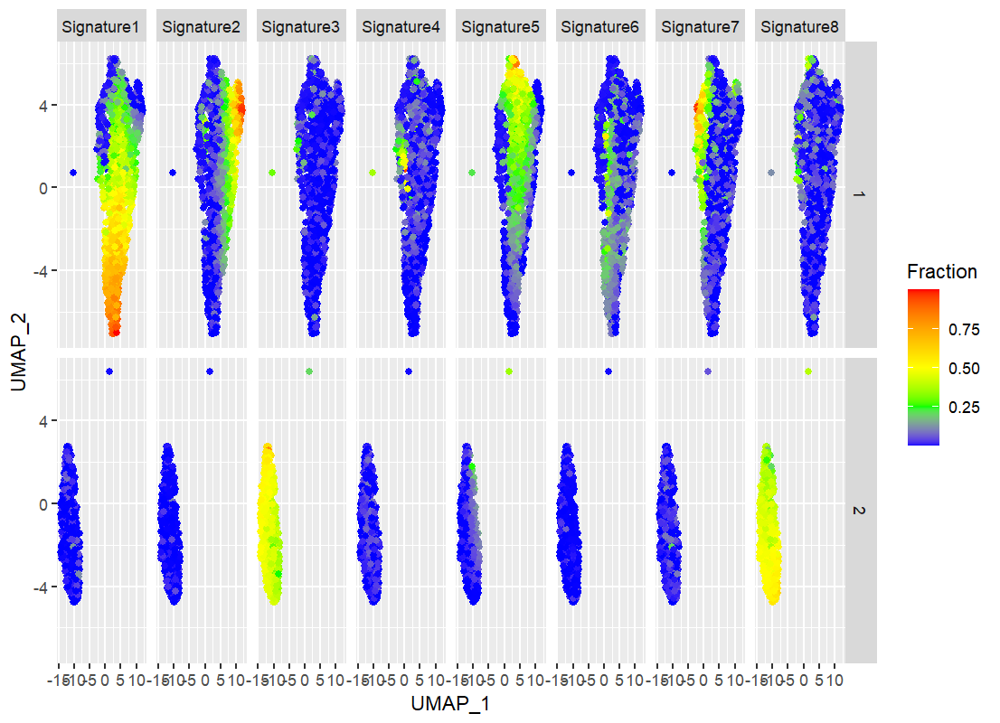
If Annotation is selected, an additional select box will show up and let you choose one type of annotation of interest. Then, you can make a plot grouping samples by both clusters and annotation.
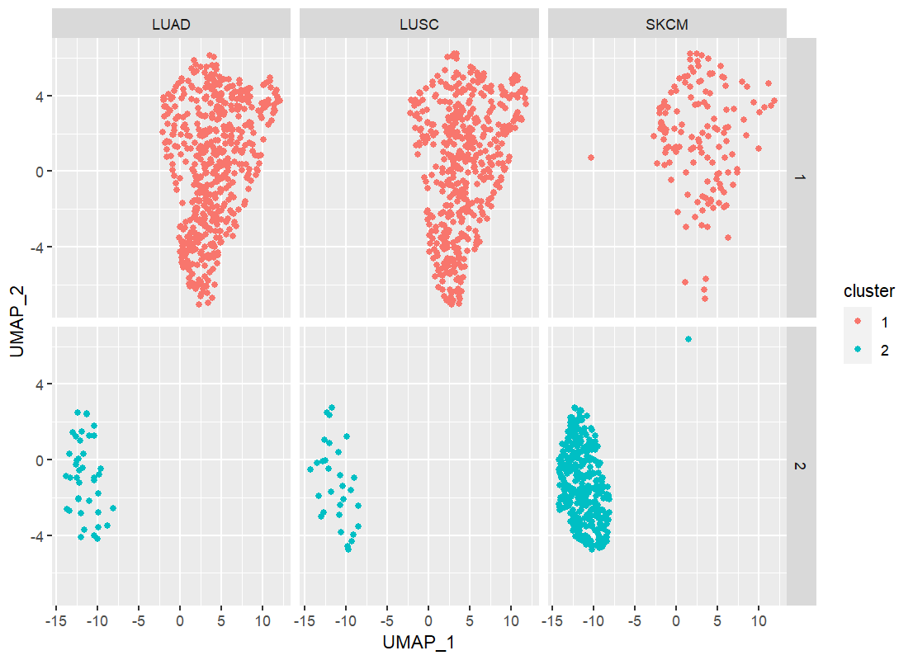
If None is selected, a single scatter plot, colored by clusters, will be made.
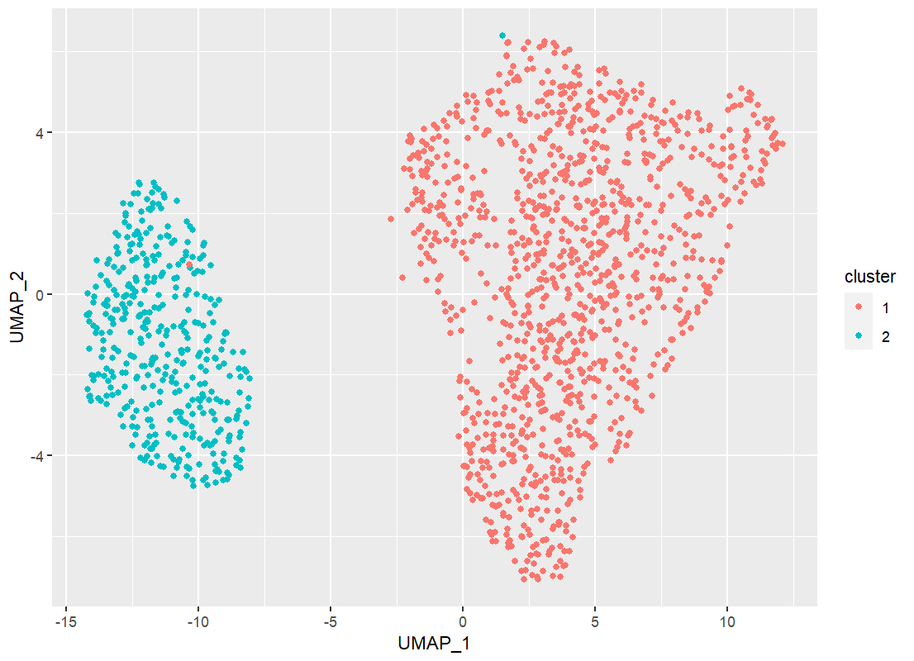
Heatmap
Please select the result object you want to use for heatmap visualization from the dropdown menu in the start labeled ‘Select Result’. Choose from different settings and press the ‘Plot’ button to see your heatmap. If you want to normalize your data, check the ‘Proportional’ setting and for z-scale normalization, check the ‘z-scale’ option. You can also see column or row names by checking ‘Show column names’ and ‘Show row names’ resepctively. If you want to subset by signatures, press ‘Selected Signatures’ to select the ones you want. You can also select the ‘Samples’ and ‘Annotation’ option to subset by the available samples and annotations respectively.  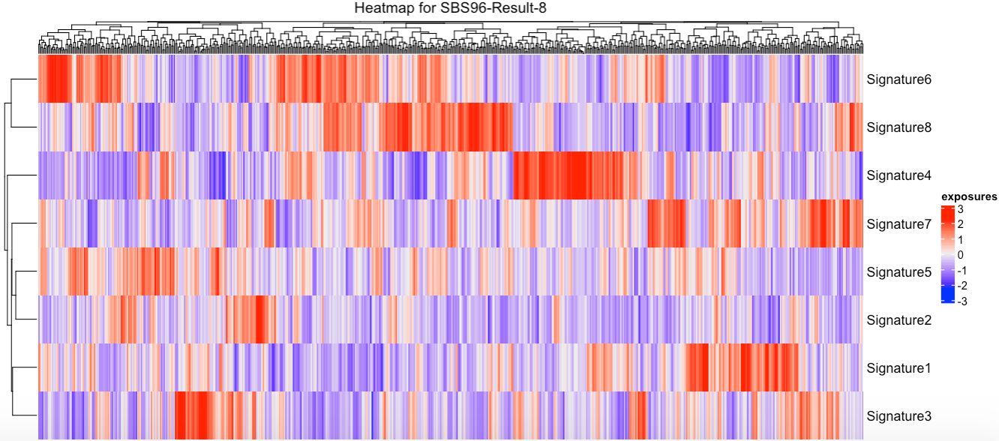
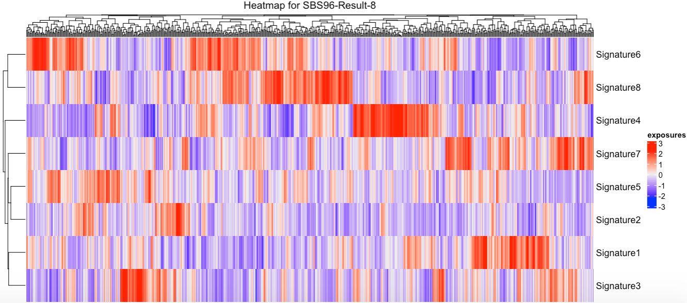
Download
You can download your musica object and musica result object from their labeled respective drop down menus as .rds files. Please select the name of the musica result or musica object that you want to download from their drop down menus and press the respective download button. include_graphics(paste0(PATH,“s/download.png”)